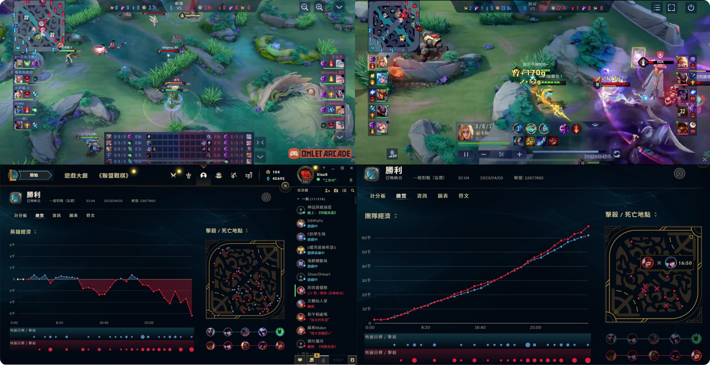
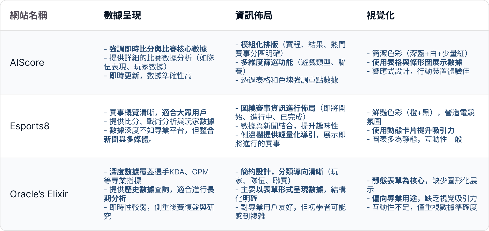
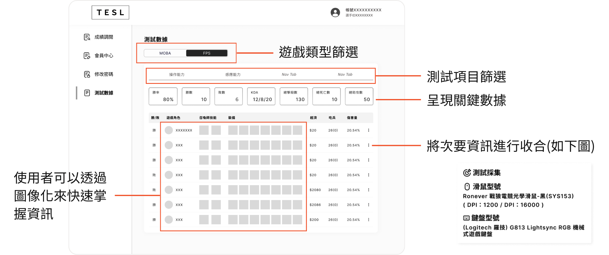
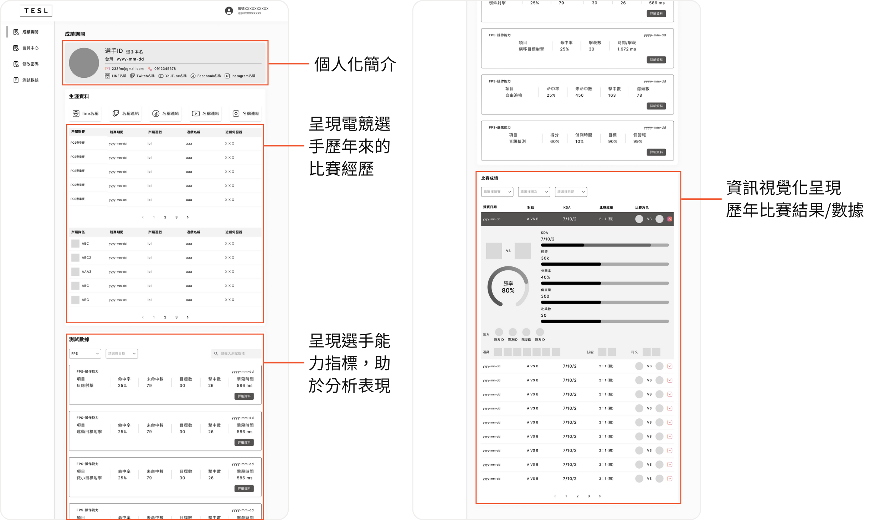
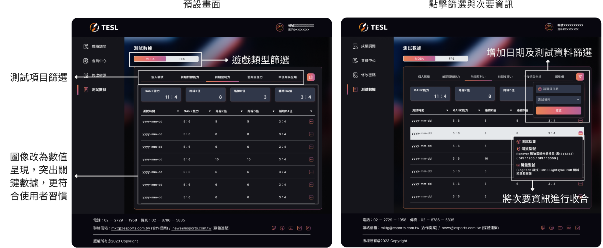
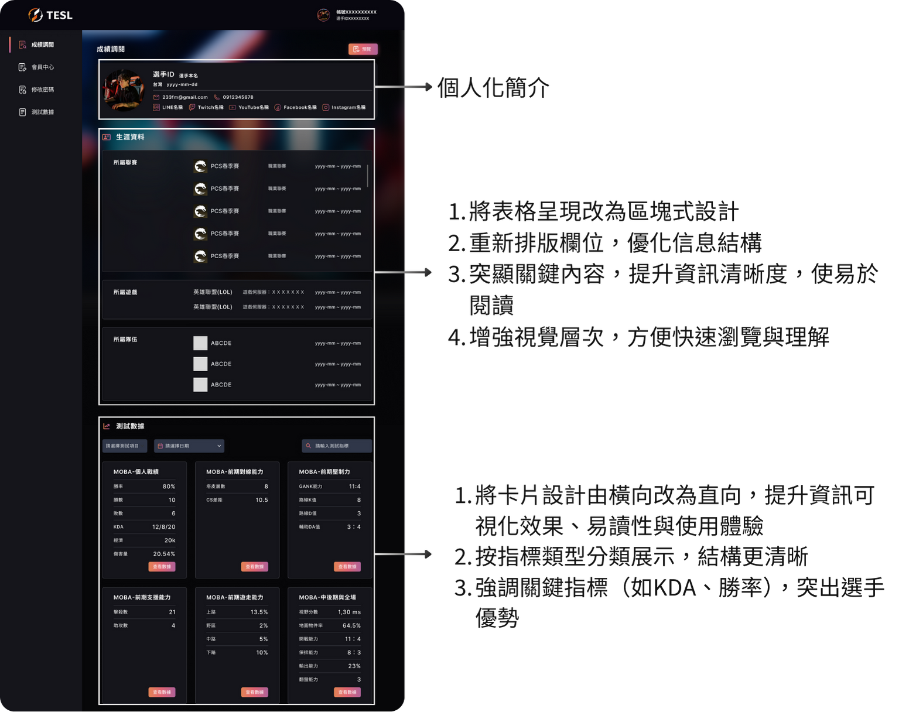
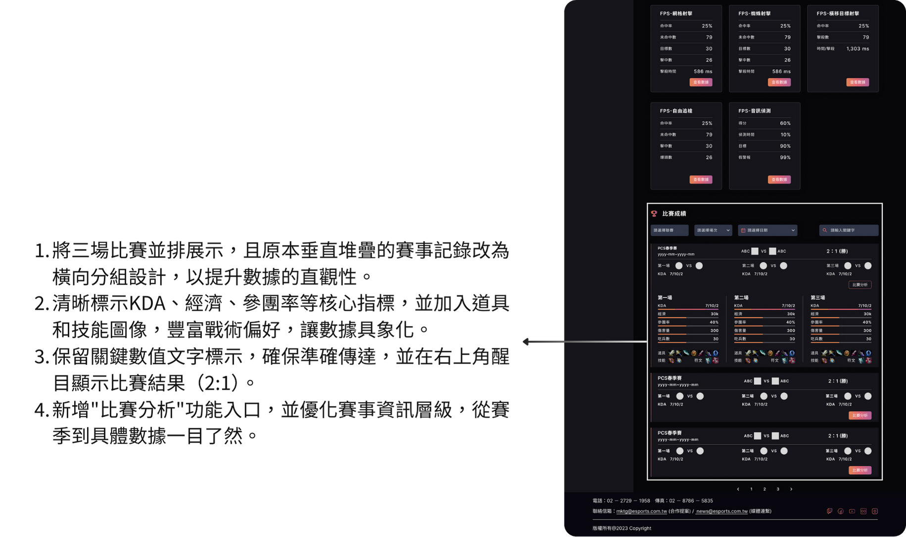
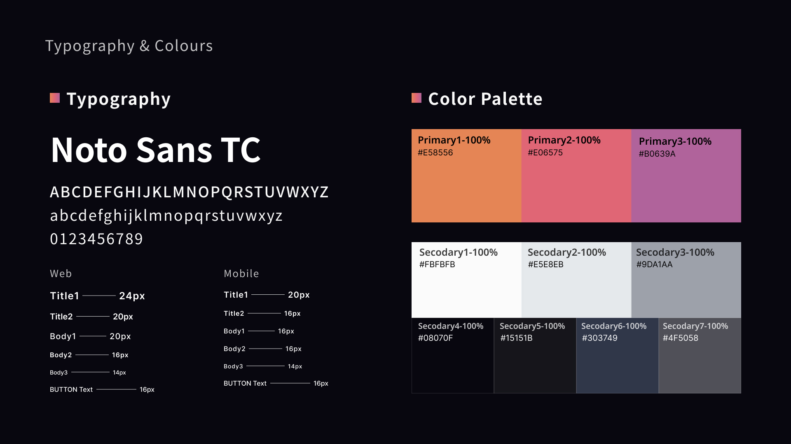
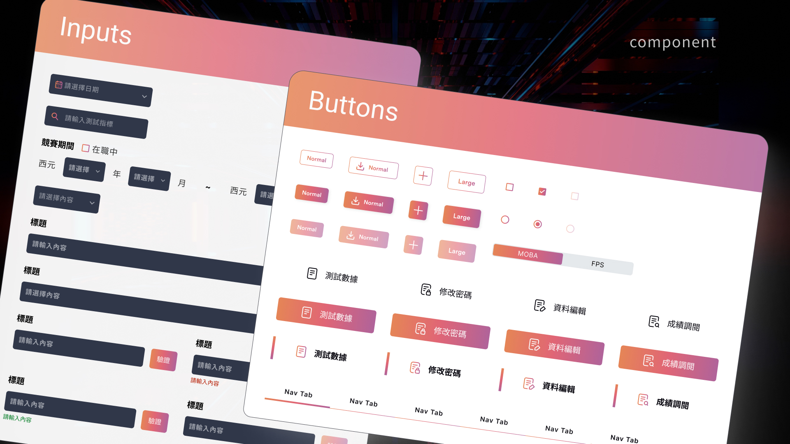
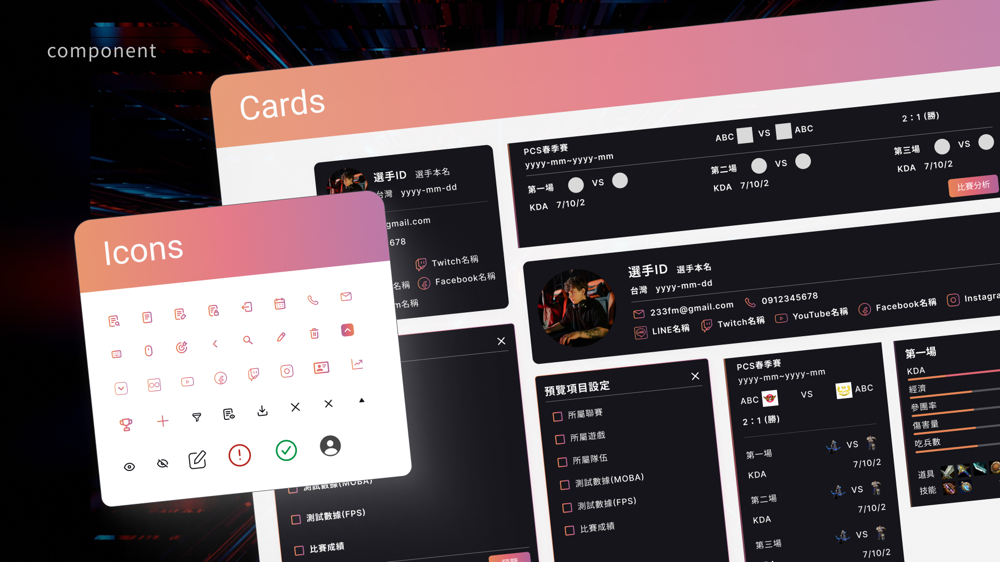

由於保密條款限制，以下僅分享成績調閱與測試數據的部分內容，敬請理解。
專案概述
全國首創！專屬電競選手的線上履歷平台
- 首個專為電競選手打造的線上履歷工具，整合比賽成績與測試數據。
- 依遊戲性質分為 MOBA 與 FPS 兩大類別，方便使用者快速查找所需數據。
- 選手可一鍵生成完整履歷，並提供電競協會直觀高效的戰績分析功能。
執行方式/流程
前期調研
- 桌面研究
- 利害關係人訪談
使用者體驗/介面設計
- 功能流程梳理與討論
- 視覺提案
- 視覺介面執行
- 響應式設計執行
設計交付
- 設計交付檔案
我們的挑戰
透過對競賽數據平台及同業網站的深入研究與分析，我們制定了全新的設計準則，旨在為目標受眾打造專屬的使用體驗。
展新的資訊架構設計
透過分層設計和功能分類，讓使用者能以最短的路徑找到目標資訊，建立流暢且直覺的操作模式。
專屬資訊視覺體系
針對產品與實際應用場景進行全面邏輯梳理，確保資訊以系統化方式清晰呈現。
使用者體驗研究計劃
場域觀察與深度訪談
透過實地觀摩大型賽事轉播現場，搭配電競戰隊管理層與職業選手的深度訪談，全方位了解產業需求。
針對電競協會對系統營運的期待，以及選手在履歷建立過程中可能遇到的實務困難，歸納出平台發展的核心方向。

國內競品分析
參考市場上相關平台，設計出直覺且完整的資訊佈局，整合戰隊、選手及電競協會等多方需求，規劃出符合電競產業生態的功能。

競品分析結果

專案目標
1. 清晰的資訊佈局
統一卡片樣式，讓選手資訊一目了然
重新規劃選手資料卡片排列，使各項競技數據與成就呈現方式一致，打造符合使用者體驗十大原則中『一致性和標準性』的介面設計。
2. 精準的視覺化標籤設計
視覺化標籤，快速辨識選手類型
依據選手類型設計專屬視覺標籤，減少文字閱讀負擔並幫助快速分類。
同步標示選手 ID，方便不同使用習慣者識別，舉例來說，FPS 玩家通常習慣以遊戲 ID 稱呼，而 MOBA 玩家則偏好使用選手名稱。
3. 最大化資訊/內容的擴充性
保留選手資料的擴充彈性
針對職業生涯較長、成就較多的資深選手，預留更充足的展示空間，在卡片盡可能完整呈現其競技表現，同時保留未來可新增及擴充的彈性空間。
概念雛形呈現
將想法視覺化，確定資訊佈局
我們建立自己的線框搞，以產生儘可能多的想法，並探索最有創意的解決方案。


使用者回饋彙總
我們優化了使用者測試介面，同時明確了主要方向
要解決的問題：資料與視覺呈現
- 垂直排列的設計是否適合所有使用場景？使用者是否會感到不習慣或需要額外的學習成本？
- 資訊分組的邏輯是否清楚且符合使用者預期？
- 資訊結構的調整是否充分考量不同使用者的偏好？個人化程度是否足以滿足各類用戶需求？
- 使用者是否能快速掌握圖示與數據之間的關聯性？
- 視覺化元素的應用是否在提升直觀性的同時，兼顧不同數據的重要性排序，避免過度簡化資訊而影響使用者對數據細節的理解？
優化方案展示
全新設計提升數據可視化
這些改進充分展現對資訊可視化的重視，同時兼顧功能性與使用者體驗的提升。在保留原有功能基礎上，新版本透過優化視覺設計與資訊架構，使界面更直觀易用，有效滿足數據導向使用者的需求，並強化資料篩選、關鍵數據呈現與操作直覺性。



設計成果
在電競履歷平台推出後，成功吸引超過200名電競選手建立個人檔案，累積超過1,000筆賽事戰績數據。在開發時，我們深入分析了使用者行為數據，並進行了10多場深度訪談，確保每項功能都能解決實際痛點。上線一個月後，平台活躍度提升20%，證實產品優化方向精準切中市場需求。
電競選手
+200 名
戰績數據
+1,000 筆
平台活耀度
+20 %
設計系統
確定視覺風格後，我們建立設計系統，以確保各螢幕一致性，並簡化開發流程。

我從專案中學習到...
在參與設計電競履歷平台時：這是我作為 UI/UX 設計師的第一份工作，也是第一個全權負責的專案。剛開始時，我對提問感到猶豫，深怕問出愚蠢的問題。然而，我很快意識到：害怕提問反而會阻礙自己的進步。
在專案初期，我們對目標使用者的了解相當有限，單靠既有的桌面研究無法完整掌握使用者需求。於是我決定主動提問，深入挖掘更多洞察，並以此作為設計過程的指引。
這段經歷讓我明白：期待自己一開始就掌握所有答案是不切實際的，唯有透過提問才能真正理解問題的全貌。藉由深入探索使用者的需求與挑戰，我得以設計出一個能滿足多元需求的平台，讓使用者能夠精準呈現履歷數據，並展現個人亮點。
看到這個專案成功地為電競選手與職場搭起橋樑，並為電競生態系的發展注入動力，我感到無比自豪。這次經驗不僅讓我體認到提問的重要性，更加堅定了我的信念：以使用者為中心的設計思維，正是創造價值的關鍵所在。
在專案初期，我們對目標使用者的了解相當有限，單靠既有的桌面研究無法完整掌握使用者需求。於是我決定主動提問，深入挖掘更多洞察，並以此作為設計過程的指引。
這段經歷讓我明白：期待自己一開始就掌握所有答案是不切實際的，唯有透過提問才能真正理解問題的全貌。藉由深入探索使用者的需求與挑戰，我得以設計出一個能滿足多元需求的平台，讓使用者能夠精準呈現履歷數據，並展現個人亮點。
看到這個專案成功地為電競選手與職場搭起橋樑，並為電競生態系的發展注入動力，我感到無比自豪。這次經驗不僅讓我體認到提問的重要性，更加堅定了我的信念：以使用者為中心的設計思維，正是創造價值的關鍵所在。